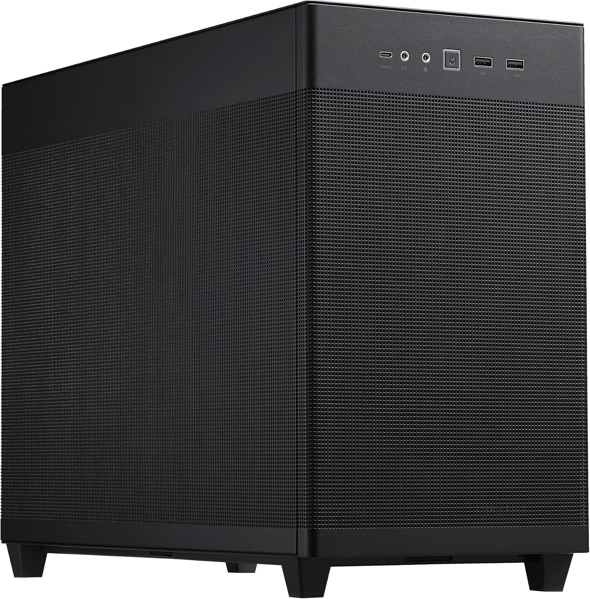

Short-read analysis
Processing of panel, exome and whole-genome sequencing data, with variant filtering, interpretation and reporting.
Choose analysis and reporting, an institutional computing system, longevity laboratory services or training. We define the scope around your samples, data and intended use.
You have sequencing data and need processing, interpretation and reporting.
Gennext for short-read and long-read data.02 ↗You want analyses to run within your institution’s infrastructure.
Worker Nodes configured for your workload.03 ↗You need laboratory work for genetic and epigenetic assessment.
Microarray and Nanopore long-read sequencing.04 ↗You want to develop skills in variant assessment and platform use.
Medical genomics courses and video resources.01 / GENNEXT
We analyse short-read and long-read sequencing data, from quality control and variant assessment to reporting. Gennext Clinical supports somatic and germline workflows; Gennext Longevity brings genetic and epigenetic findings into professional wellness services.
 ANALYSIS & REPORTING
ANALYSIS & REPORTINGShort-read / Long-read
Quality control and processing
Variants and evidence
Expert review
Longevity reports support personalised health guidance; they are not diagnostic tests.
02 / WORKER NODE
A Worker Node is a computing unit that runs genomic analysis tasks on site. Capacity and deployment are planned around data volume, concurrent analysis needs and your existing infrastructure.

GENNEXT / DISTRIBUTED ANALYSIS
Central services process the operational metadata needed for coordination. Connections are schematic.
Genomic inputs and analysis outputs are processed on the assigned local infrastructure. Central services coordinate user access and analysis tasks.
LONGEVITY LABORATORY
Our laboratory performs microarray and long-read sequencing work, supporting the genetic and epigenetic assessments within our longevity services.
Genotyping and DNA methylation workflows provide data for genetic predisposition and epigenetic assessment.
We sequence long DNA fragments with Nanopore technology and analyse the resulting data for the aims of each study.
04 / Training
Our medical genomics training addresses variant interpretation and prioritisation. Contact us for programme scope and participation details.
GENNEXT COMMUNITY
Explore Gennext and somatic analysis workflows through our video tutorials.
Talk to us about your software, infrastructure and training needs.